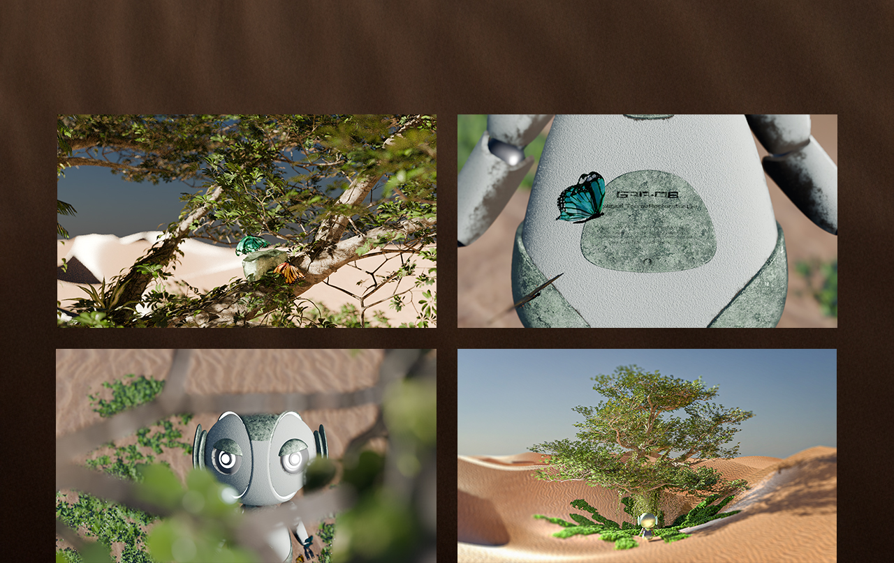
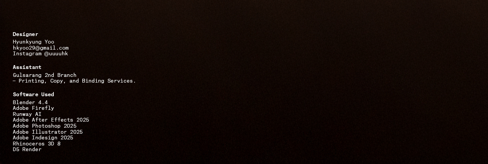
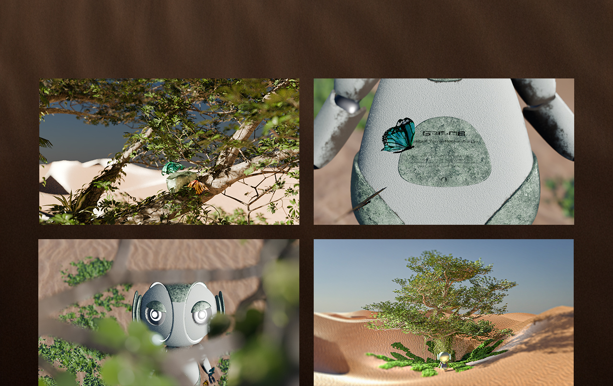
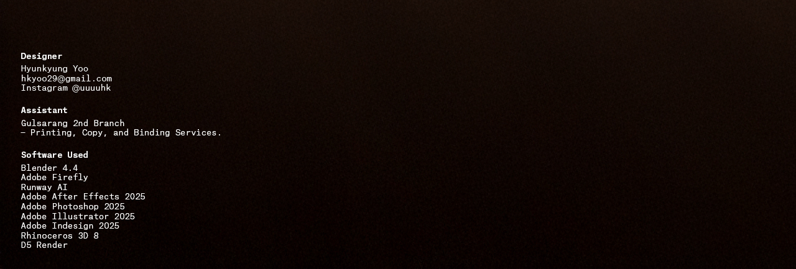
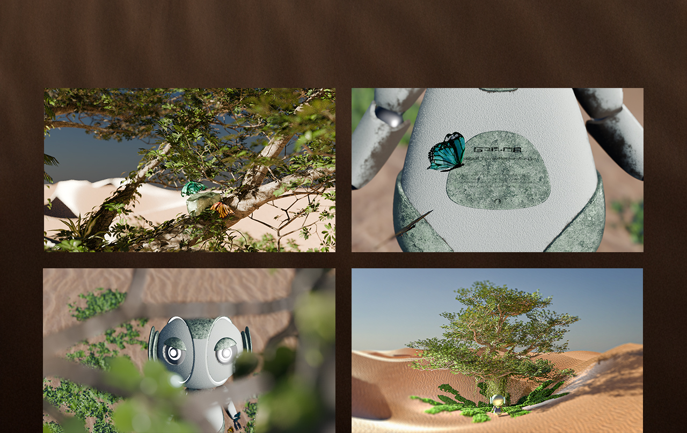
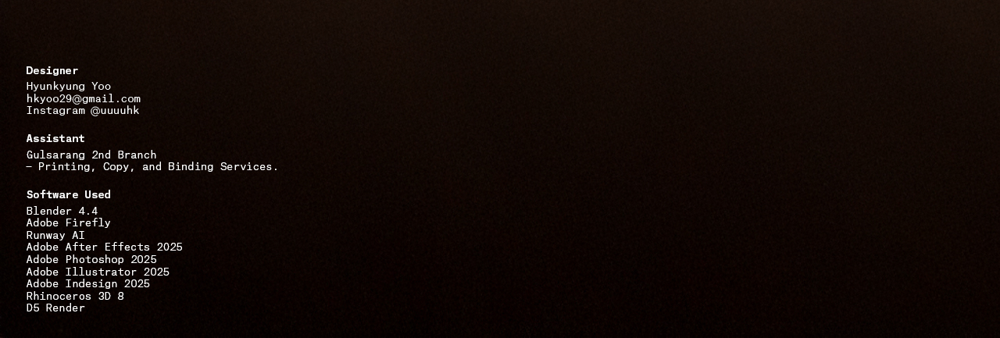

가이아-07
GAIA-07
유현경
인류의 마지막 생태계 복원 로봇이었던 ‘가이아-07’이 우연한 계기로 깨어나 황폐해진 지구를 다시 되살리는 과정을 담은 단편 애니메이션입니다. 이를 통해 보는 이로 하여금 생명의 소중함을 다시금 되새기도록 합니다.


2025ⓒSeoul National University of Science and Technology.All Rights Reserved.